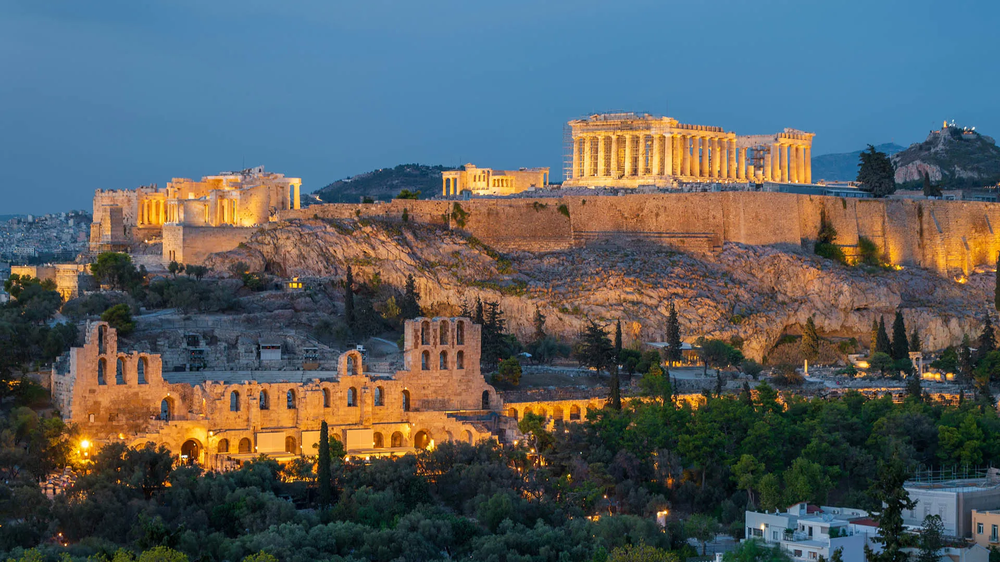
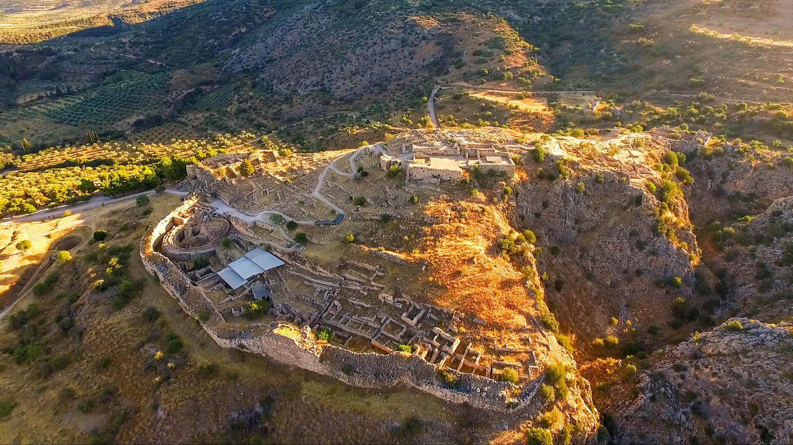
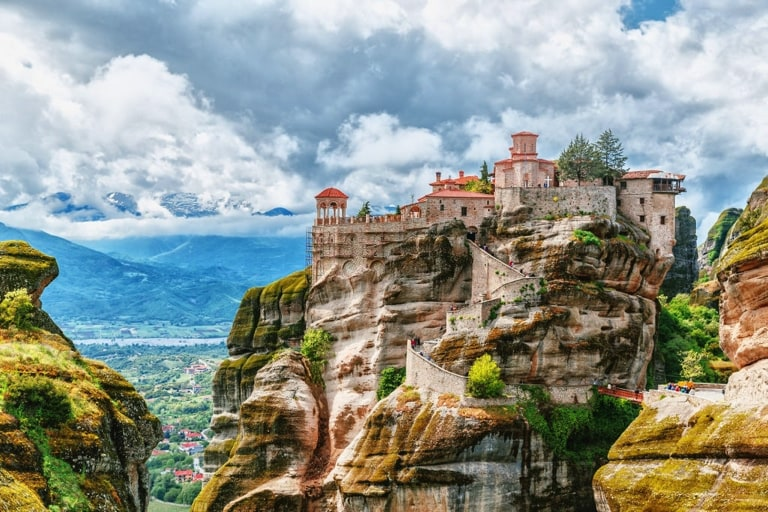

GREECE
Greece through the ages
- Prehistoric Age: Early settlements and civilizations developed (Cycladic, Minoan, Mycenaean). Ancient Greece: Birth of democracy, philosophy, science, and powerful city-states like Athens and Sparta.
- Ancient Greece:Birth of democracy, philosophy, science, and powerful city-states like Athens and Sparta.
- Roman Period: Greece became part of the Roman Empire while strongly influencing Roman culture.
- Byzantine Age: Greek language and Orthodox Christianity dominated, with Constantinople as the center.
- Modern Greece:The War of Independence in 1821 led to the modern Greek state and its development to today.
Famous sights
The acropolis of Athens (Athens)

It is the most famous ancient site in Greece and a symbol of democracy. Visitors can see the Parthenon and enjoy views over the city.
Mycenae

Mycenae was an important center of the Mycenaean civilization in ancient Greece. Visitors can see the Lion Gate, the royal tombs, and the remains of the ancient palace.
Meteora

Meteora is known for its monasteries built on tall rock formations. It is a UNESCO World Heritage Site and a unique place to visit.
Greek Food
- Moussaka: Moussaka is a traditional Greek dish made with eggplant, minced meat, and béchamel sauce. It is one of the most popular Greek meals.
- Souvlaki:Souvlaki consists of grilled meat served on a skewer or in pita bread. It is a common and affordable street food in Greece.
- Baklava: Baklava is a sweet dessert made with layers of pastry, nuts, and honey. It is popular throughout Greece and the Mediterranean.
Tips for travelers
- Best Time to Visit: The best time to visit Greece is spring or early autumn. The weather is pleasant and there are fewer tourists.
- Money & Payments: Credit cards are widely accepted, but it is good to carry some cash. Small shops and taxis may prefer cash.
- Food & Dining: Greeks usually eat late, especially dinner after 8 p.m. Tipping is appreciated but not required.
- Transportation: Public transport is good in big cities, but ferries are common for island travel. Always check ferry schedules in advance.
- Respect & Culture: Dress modestly when visiting churches or monasteries. Being polite and greeting people is important in Greek culture.